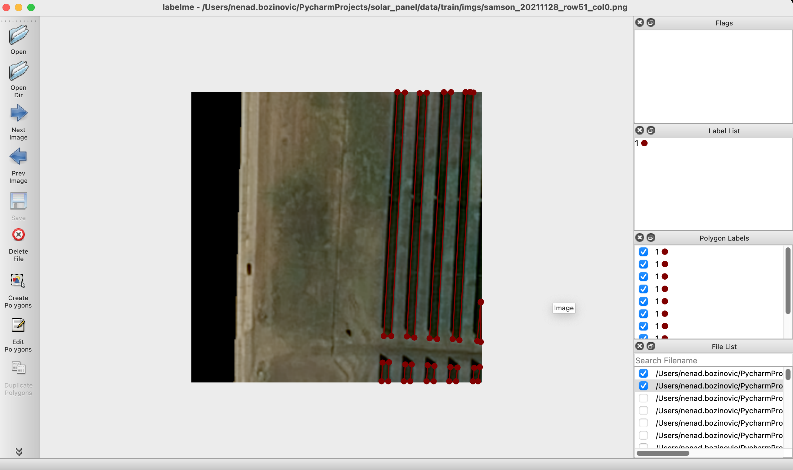
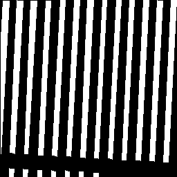

from PIL import Image, ImageDraw
from pathlib import Path
import jsonLabeling
LabelMe
LabelMe is simple-to-use GUI for labeling. It is straightforward to use (pip install labelme, run in terminal as labelme):

The segmentation points will be saved as json files:
{
"version": "5.1.1",
"flags": {},
"shapes": [
{
"label": "1",
"points": [
[
4.029411764705877,
1.0882352941176439
],
[
0.7941176470588189,
53.73529411764706
],
[
0.7941176470588189,
221.97058823529412
],
[
12.852941176470587,
1.3823529411764672
]
],
"group_id": null,
"shape_type": "polygon",
"flags": {}
},
...Let’s load some image and generated json file:
im = Image.open("images/solar_panels.png")
width, height = im.size
print(width, height)
im256 256
Let’s convert the json into a mask:
with open('images/solar_panels.json') as f:
data = json.load(f)There are:
points = data['shapes']
len(points)2020 data points, let’s make a mask out of those:
mask = Image.new('L', (width, height), 0)
for group in points:
label_class = group['label']
polygon = group['points']
polygon = [(round(x), round(y)) for x,y in polygon]
ImageDraw.Draw(mask).polygon(polygon, outline=255, fill=255)
mask
and save this as a file:
mask.save('images/solar_panels_mask.png')assert Path('images/solar_panels_mask.png').is_file()